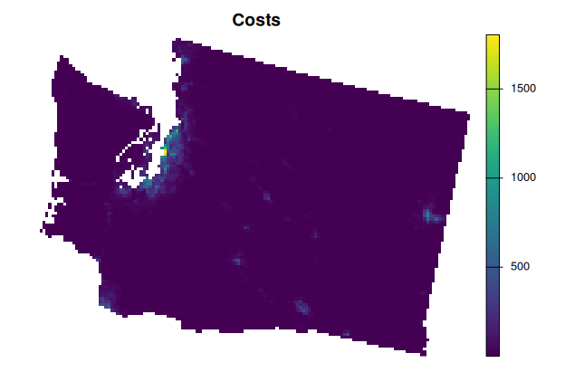
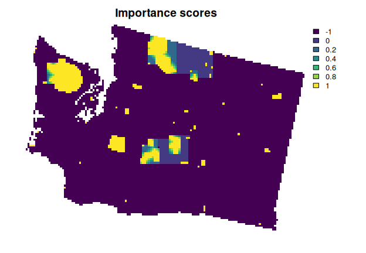

Systematic Conservation Prioritization in R
The prioritizr R package uses mixed integer linear programming (MILP) techniques to provide a flexible interface for building and solving conservation planning problems. It supports a broad range of objectives, constraints, and penalties that can be used to custom-tailor conservation planning problems to the specific needs of a conservation planning exercise. Once built, conservation planning problems can be solved using a variety of commercial and open-source exact algorithm solvers. In contrast to the algorithms conventionally used to solve conservation problems, such as heuristics or simulated annealing, the exact algorithms used here are guaranteed to find optimal solutions. Furthermore, conservation problems can be constructed to optimize the spatial allocation of different management actions or zones, meaning that conservation practitioners can identify solutions that benefit multiple stakeholders. Finally, this package has the functionality to read input data formatted for the Marxan conservation planning program, and find much cheaper solutions in a much shorter period of time than Marxan.
Installation
The latest official version of the prioritizr R package can be installed from the Comprehensive R Archive Network (CRAN) using the following R code.
install.packages("prioritizr", repos = "https://cran.rstudio.com/")Alternatively, the latest development version can be installed from GitHub using the following code. Please note that while developmental versions may contain additional features not present in the official version, they may also contain coding errors.
if (!require(remotes)) install.packages("remotes")
remotes::install_github("prioritizr/prioritizr")Citation
Please cite the prioritizr R package when using it in publications. To cite the latest official version, please use:
Hanson JO, Schuster R, Morrell N, Strimas-Mackey M, Edwards BPM, Watts ME, Arcese P, Bennett J, Possingham HP (2023). prioritizr: Systematic Conservation Prioritization in R. R package version 8.0.0. Available at https://CRAN.R-project.org/package=prioritizr.
Alternatively, to cite the latest development version, please use:
Hanson JO, Schuster R, Morrell N, Strimas-Mackey M, Edwards BPM, Watts ME, Arcese P, Bennett J, Possingham HP (2023). prioritizr: Systematic Conservation Prioritization in R. R package version 8.0.0. Available at https://github.com/prioritizr/prioritizr.
Additionally, we keep a record of publications that use the prioritizr R package. If you use this package in any reports or publications, please file an issue on GitHub so we can add it to the record.
Usage
Here we provide a short example showing how the prioritizr R package can be used to build and solve conservation problems. Specifically, we will use an example dataset available through the prioritizrdata R package. To begin with, we will load the packages.
# load packages
library(prioritizr)
library(prioritizrdata)We will use the Washington dataset in this example. To import the planning unit data, we will use the get_wa_pu() function. Although the prioritizr R package can support many different types of planning unit data, here our planning units are represented as a single-layer raster (i.e., terra::rast() object). Each cell represents a different planning unit, and cell values denote land acquisition costs. Specifically, there are 10757 planning units in total (i.e., cells with non-missing values).
## class : SpatRaster
## dimensions : 109, 147, 1 (nrow, ncol, nlyr)
## resolution : 4000, 4000 (x, y)
## extent : -1816382, -1228382, 247483.5, 683483.5 (xmin, xmax, ymin, ymax)
## coord. ref. : +proj=laea +lat_0=45 +lon_0=-100 +x_0=0 +y_0=0 +ellps=sphere +units=m +no_defs
## source : wa_pu.tif
## name : cost
## min value : 0.2986647
## max value : 1804.1838379
# plot data
plot(wa_pu, main = "Costs", axes = FALSE)
Next, we will use the get_wa_features() function to import the conservation feature data. Although the prioritizr R package can support many different types of feature data, here our feature data are represented as a multi-layer raster (i.e., terra::rast() object). Each layer describes the spatial distribution of a feature. Here, our feature data correspond to different bird species. To account for migratory patterns, the breeding and non-breeding distributions of species are represented as different features. Specifically, the cell values denote the relative abundance of individuals, with higher values indicating greater abundance.
# import feature data
wa_features <- get_wa_features()
# preview data
print(wa_features)## class : SpatRaster
## dimensions : 109, 147, 396 (nrow, ncol, nlyr)
## resolution : 4000, 4000 (x, y)
## extent : -1816382, -1228382, 247483.5, 683483.5 (xmin, xmax, ymin, ymax)
## coord. ref. : +proj=laea +lat_0=45 +lon_0=-100 +x_0=0 +y_0=0 +ellps=sphere +units=m +no_defs
## source : wa_features.tif
## names : Recur~ding), Botau~ding), Botau~ding), Corvu~ding), Corvu~ding), Cincl~full), ...
## min values : 0.000, 0.000, 0.000, 0.000, 0.000, 0.00, ...
## max values : 0.514, 0.812, 3.129, 0.115, 0.296, 0.06, ...
# plot the first nine features
plot(wa_features[[1:9]], nr = 3, axes = FALSE)
Let’s make sure that you have a solver installed on your computer. This is important so that you can use optimization algorithms to generate spatial prioritizations. If this is your first time using the prioritizr R package, please install the HiGHS solver using the following R code. Although the HiGHS solver is relatively fast and easy to install, please note that you’ll need to install the Gurobi software suite and the gurobi R package for best performance (see the Gurobi Installation Guide for details).
# if needed, install HiGHS solver
install.packages("highs", repos = "https://cran.rstudio.com/")Now, let’s generate a spatial prioritization. To ensure feasibility, we will set a budget. Specifically, the total cost of the prioritization will represent a 5% of the total land value in the study area. Given this budget, we want the prioritization to increase feature representation, as much as possible, so that each feature would, ideally, have 20% of its distribution covered by the prioritization. In this scenario, we can either purchase all of the land inside a given planning unit, or none of the land inside a given planning unit. Thus we will create a new problem() that will use a minimum shortfall objective (via add_min_shortfall_objective()), with relative targets of 20% (via add_relative_targets()), binary decisions (via add_binary_decisions()), and specify that we want to want near-optimal solutions (i.e., 10% from optimality) using the best solver installed on our computer (via add_default_solver()).
# calculate budget
budget <- terra::global(wa_pu, "sum", na.rm = TRUE)[[1]] * 0.05
# create problem
p1 <-
problem(wa_pu, features = wa_features) %>%
add_min_shortfall_objective(budget) %>%
add_relative_targets(0.2) %>%
add_binary_decisions() %>%
add_default_solver(gap = 0.1)
# print the problem
print(p1)## A conservation problem (<ConservationProblem>)
## ├•data
## │├•features: "Recurvirostra americana (breeding)" , … (396 total)
## │└•planning units:
## │ ├•data: <SpatRaster> (10757 total)
## │ ├•costs: continuous values (between 0.2987 and 1804.1838)
## │ ├•extent: -1816381.6182, 247483.5211, -1228381.6182, 683483.5211 (xmin, ymin, xmax, ymax)
## │ └•CRS: PROJCRS["unknown",
## ├•formulation
## │├•objective: minimum shortfall objective (`budget` = 8748.4908)
## │├•penalties: none specified
## │├•targets: relative targets (between 0.2 and 0.2)
## │├•constraints: none specified
## │└•decisions: binary decision
## └•optimization
## ├•portfolio: shuffle portfolio (`number_solutions` = 1, …)
## └•solver: gurobi solver (`gap` = 0.1, `time_limit` = 2147483647, `first_feasible` = FALSE, …)
## # ℹ Use `summary(...)` to see complete formulation.After we have built a problem(), we can solve it to obtain a solution.
# solve the problem
s1 <- solve(p1)## Gurobi Optimizer version 10.0.0 build v10.0.0rc2 (linux64)
##
## CPU model: 11th Gen Intel(R) Core(TM) i7-1185G7 @ 3.00GHz, instruction set [SSE2|AVX|AVX2|AVX512]
## Thread count: 4 physical cores, 8 logical processors, using up to 1 threads
##
## Optimize a model with 397 rows, 11153 columns and 1535510 nonzeros
## Model fingerprint: 0xed3a5545
## Variable types: 396 continuous, 10757 integer (10757 binary)
## Coefficient statistics:
## Matrix range [1e-03, 2e+03]
## Objective range [5e-02, 5e-02]
## Bounds range [1e+00, 1e+00]
## RHS range [2e+01, 9e+03]
## Found heuristic solution: objective 396.0000000
## Found heuristic solution: objective 395.9999995
## Presolve removed 1 rows and 1 columns
## Presolve time: 1.83s
## Presolved: 396 rows, 11152 columns, 1535508 nonzeros
## Variable types: 394 continuous, 10758 integer (10758 binary)
## Found heuristic solution: objective 393.9999995
## Root relaxation presolved: 396 rows, 11152 columns, 1535508 nonzeros
##
##
## Root relaxation: objective 4.056159e+00, 428 iterations, 0.34 seconds (0.66 work units)
##
## Nodes | Current Node | Objective Bounds | Work
## Expl Unexpl | Obj Depth IntInf | Incumbent BestBd Gap | It/Node Time
##
## 0 0 4.05616 0 41 394.00000 4.05616 99.0% - 2s
## H 0 0 4.5230867 4.05616 10.3% - 2s
## H 0 0 4.4052105 4.05616 7.92% - 2s
##
## Explored 1 nodes (428 simplex iterations) in 2.94 seconds (6.33 work units)
## Thread count was 1 (of 8 available processors)
##
## Solution count 4: 4.40521 4.52309 394 396
##
## Optimal solution found (tolerance 1.00e-01)
## Best objective 4.405210494541e+00, best bound 4.056158599175e+00, gap 7.9236%## solution_1
## 4.40521## solution_1
## 3.141## solution_1
## "OPTIMAL"
# plot the solution
plot(s1, main = "Solution", axes = FALSE)
After generating a solution, it is important to evaluate it. Here, we will calculate the number of planning units selected by the solution, and the total cost of the solution. We can also check how many representation targets are met by the solution.
# calculate number of selected planning units by solution
eval_n_summary(p1, s1)## # A tibble: 1 × 2
## summary n
## <chr> <dbl>
## 1 overall 2319
# calculate total cost of solution
eval_cost_summary(p1, s1)## # A tibble: 1 × 2
## summary cost
## <chr> <dbl>
## 1 overall 8748.
# calculate target coverage for the solution
p1_target_coverage <- eval_target_coverage_summary(p1, s1)
print(p1_target_coverage)## # A tibble: 396 × 9
## feature met total…¹ absol…² absol…³ absol…⁴ relat…⁵ relat…⁶ relat…⁷
## <chr> <lgl> <dbl> <dbl> <dbl> <dbl> <dbl> <dbl> <dbl>
## 1 Recurvirostra … TRUE 100. 20.0 23.4 0 0.2 0.233 0
## 2 Botaurus lenti… TRUE 99.9 20.0 29.2 0 0.2 0.293 0
## 3 Botaurus lenti… TRUE 100. 20.0 34.0 0 0.2 0.340 0
## 4 Corvus brachyr… TRUE 99.9 20.0 20.2 0 0.2 0.202 0
## 5 Corvus brachyr… FALSE 99.9 20.0 18.7 1.29 0.2 0.187 0.0129
## 6 Cinclus mexica… TRUE 100. 20.0 20.4 0 0.2 0.204 0
## 7 Spinus tristis… TRUE 99.9 20.0 22.4 0 0.2 0.224 0
## 8 Spinus tristis… TRUE 99.9 20.0 23.0 0 0.2 0.230 0
## 9 Falco sparveri… TRUE 99.9 20.0 24.5 0 0.2 0.245 0
## 10 Falco sparveri… TRUE 100. 20.0 24.4 0 0.2 0.244 0
## # … with 386 more rows, and abbreviated variable names ¹total_amount,
## # ²absolute_target, ³absolute_held, ⁴absolute_shortfall, ⁵relative_target,
## # ⁶relative_held, ⁷relative_shortfall
# check percentage of the features that have their target met given the solution
print(mean(p1_target_coverage$met) * 100)## [1] 96.46465Although this solution helps meet the representation targets, it does not account for existing protected areas inside the study area. As such, it may be inefficient. This is because it might not account for the possibility that some features could be partially – or even fully – represented by existing protected areas. To address this issue, we will use the get_wa_locked_in() function to import spatial data for protected areas in the study area. We will then add constraints to the problem() to ensure they are selected by the solution (via add_locked_in_constraints()).
# import locked in data
wa_locked_in <- get_wa_locked_in()
# print data
print(wa_locked_in)## class : SpatRaster
## dimensions : 109, 147, 1 (nrow, ncol, nlyr)
## resolution : 4000, 4000 (x, y)
## extent : -1816382, -1228382, 247483.5, 683483.5 (xmin, xmax, ymin, ymax)
## coord. ref. : +proj=laea +lat_0=45 +lon_0=-100 +x_0=0 +y_0=0 +ellps=sphere +units=m +no_defs
## source : wa_locked_in.tif
## name : protected areas
## min value : 0
## max value : 1
# plot data
plot(wa_locked_in, main = "Existing protected areas", axes = FALSE)
# create new problem with locked in constraints added to it
p2 <-
p1 %>%
add_locked_in_constraints(wa_locked_in)
# solve the problem
s2 <- solve(p2)## Gurobi Optimizer version 10.0.0 build v10.0.0rc2 (linux64)
##
## CPU model: 11th Gen Intel(R) Core(TM) i7-1185G7 @ 3.00GHz, instruction set [SSE2|AVX|AVX2|AVX512]
## Thread count: 4 physical cores, 8 logical processors, using up to 1 threads
##
## Optimize a model with 397 rows, 11153 columns and 1535510 nonzeros
## Model fingerprint: 0xfb76c9ab
## Variable types: 396 continuous, 10757 integer (10757 binary)
## Coefficient statistics:
## Matrix range [1e-03, 2e+03]
## Objective range [5e-02, 5e-02]
## Bounds range [1e+00, 1e+00]
## RHS range [2e+01, 9e+03]
## Found heuristic solution: objective 333.7160201
## Found heuristic solution: objective 333.7160193
## Presolve removed 3 rows and 558 columns
## Presolve time: 1.75s
## Presolved: 394 rows, 10595 columns, 1465847 nonzeros
## Variable types: 392 continuous, 10203 integer (10203 binary)
## Found heuristic solution: objective 331.7160193
## Root relaxation presolved: 394 rows, 10595 columns, 1465847 nonzeros
##
##
## Root relaxation: objective 8.018469e+00, 405 iterations, 0.32 seconds (0.61 work units)
##
## Nodes | Current Node | Objective Bounds | Work
## Expl Unexpl | Obj Depth IntInf | Incumbent BestBd Gap | It/Node Time
##
## 0 0 8.01847 0 37 331.71602 8.01847 97.6% - 2s
## H 0 0 8.7313956 8.01847 8.17% - 2s
##
## Cleanup yields a better solution
##
## Explored 1 nodes (405 simplex iterations) in 2.20 seconds (5.00 work units)
## Thread count was 1 (of 8 available processors)
##
## Solution count 4: 8.69101 8.7314 331.716 333.716
##
## Optimal solution found (tolerance 1.00e-01)
## Best objective 8.691006632049e+00, best bound 8.018468564544e+00, gap 7.7383%
# plot the solution
plot(s2, main = "Solution", axes = FALSE)
We can also confirm that the solution is improving feature representation. To achieve this, we can compare the percentage of features that have their target met given the existing protected area system to that given the prioritization. Below, we can see that the percentage is much higher given the solution.
# check percentage of the features that have their target met given the solution
p2_target_coverage <- eval_target_coverage_summary(p1, s1)
print(mean(p2_target_coverage$met) * 100)## [1] 96.46465
# check percentage of the features that have their target met given the
# existing protected area system
p0_target_coverage <- eval_target_coverage_summary(p1, wa_locked_in)
print(mean(p0_target_coverage$met) * 100)## [1] 0.5050505This solution is an improvement over the previous solution. However, there are some places in the study area that are not available for protected area establishment (e.g., due to land tenure). As a consequence, the solution might not be practical for implementation, because it might select some places that are not available for protection. To address this issue, we will use the get_wa_locked_out() function to import spatial data describing which planning units are not available for protection. We will then add constraints to the problem() to ensure they are not selected by the solution (via add_locked_out_constraints()).
# import locked out data
wa_locked_out <- get_wa_locked_out()
# print data
print(wa_locked_out)## class : SpatRaster
## dimensions : 109, 147, 1 (nrow, ncol, nlyr)
## resolution : 4000, 4000 (x, y)
## extent : -1816382, -1228382, 247483.5, 683483.5 (xmin, xmax, ymin, ymax)
## coord. ref. : +proj=laea +lat_0=45 +lon_0=-100 +x_0=0 +y_0=0 +ellps=sphere +units=m +no_defs
## source : wa_locked_out.tif
## name : urban areas
## min value : 0
## max value : 1
# plot data
plot(wa_locked_out, main = "Areas not available for protection", axes = FALSE)
# create new problem with locked out constraints added to it
p3 <-
p2 %>%
add_locked_out_constraints(wa_locked_out)
# solve the problem
s3 <- solve(p3)## Gurobi Optimizer version 10.0.0 build v10.0.0rc2 (linux64)
##
## CPU model: 11th Gen Intel(R) Core(TM) i7-1185G7 @ 3.00GHz, instruction set [SSE2|AVX|AVX2|AVX512]
## Thread count: 4 physical cores, 8 logical processors, using up to 1 threads
##
## Optimize a model with 397 rows, 11153 columns and 1535510 nonzeros
## Model fingerprint: 0xcd0ce6db
## Variable types: 396 continuous, 10757 integer (10757 binary)
## Coefficient statistics:
## Matrix range [1e-03, 2e+03]
## Objective range [5e-02, 5e-02]
## Bounds range [1e+00, 1e+00]
## RHS range [2e+01, 9e+03]
## Found heuristic solution: objective 333.7160201
## Found heuristic solution: objective 333.7160193
## Presolve removed 7 rows and 1961 columns
## Presolve time: 1.66s
## Presolved: 390 rows, 9192 columns, 1240981 nonzeros
## Variable types: 388 continuous, 8804 integer (8804 binary)
## Found heuristic solution: objective 330.2780131
## Root relaxation presolved: 390 rows, 9192 columns, 1240981 nonzeros
##
##
## Root relaxation: objective 1.056277e+01, 329 iterations, 0.23 seconds (0.49 work units)
##
## Nodes | Current Node | Objective Bounds | Work
## Expl Unexpl | Obj Depth IntInf | Incumbent BestBd Gap | It/Node Time
##
## 0 0 10.56277 0 33 330.27801 10.56277 96.8% - 1s
## H 0 0 11.5634004 10.56277 8.65% - 2s
##
## Cleanup yields a better solution
##
## Explored 1 nodes (329 simplex iterations) in 2.01 seconds (4.18 work units)
## Thread count was 1 (of 8 available processors)
##
## Solution count 4: 11.3821 11.5634 330.278 333.716
##
## Optimal solution found (tolerance 1.00e-01)
## Best objective 1.138205342098e+01, best bound 1.056277047717e+01, gap 7.1980%
# plot the solution
plot(s3, main = "Solution", axes = FALSE)This solution is even better then the previous solution. However, we are not finished yet. The planning units selected by the solution are fairly fragmented. This can cause issues because fragmentation increases management costs and reduces conservation benefits through edge effects. To address this issue, we can further modify the problem by adding penalties that punish overly fragmented solutions (via add_boundary_penalties()). Here we will use a penalty factor (i.e., boundary length modifier) of 0.003, and an edge factor of 50% so that planning units that occur on the outer edge of the study area are not overly penalized.
# create new problem with boundary penalties added to it
p4 <-
p3 %>%
add_boundary_penalties(penalty = 0.001, edge_factor = 0.5)
# solve the problem
s4 <- solve(p4)## Gurobi Optimizer version 10.0.0 build v10.0.0rc2 (linux64)
##
## CPU model: 11th Gen Intel(R) Core(TM) i7-1185G7 @ 3.00GHz, instruction set [SSE2|AVX|AVX2|AVX512]
## Thread count: 4 physical cores, 8 logical processors, using up to 1 threads
##
## Optimize a model with 42569 rows, 32239 columns and 1619854 nonzeros
## Model fingerprint: 0x5aa3e86e
## Variable types: 396 continuous, 31843 integer (31843 binary)
## Coefficient statistics:
## Matrix range [1e-03, 2e+03]
## Objective range [5e-02, 2e+01]
## Bounds range [1e+00, 1e+00]
## RHS range [2e+01, 9e+03]
## Found heuristic solution: objective 2511.7160201
## Found heuristic solution: objective 2511.7160193
## Presolve removed 8989 rows and 6461 columns
## Presolve time: 4.86s
## Presolved: 33580 rows, 25778 columns, 1305846 nonzeros
## Variable types: 388 continuous, 25390 integer (25390 binary)
## Found heuristic solution: objective 2367.7159193
## Root relaxation presolved: 33580 rows, 25778 columns, 1305846 nonzeros
##
##
## Root simplex log...
##
## Iteration Objective Primal Inf. Dual Inf. Time
## 0 -9.1740427e+01 1.564548e+03 0.000000e+00 6s
## 5951 6.0110274e+02 1.197542e+06 0.000000e+00 10s
## 9187 9.0186157e+02 5.812451e+05 0.000000e+00 15s
## 13907 1.7603123e+03 1.350032e+06 0.000000e+00 20s
## 17777 1.9509150e+03 3.775711e+03 0.000000e+00 25s
## 20274 2.0113000e+03 0.000000e+00 0.000000e+00 29s
## 20274 2.0113000e+03 0.000000e+00 0.000000e+00 29s
##
## Root relaxation: objective 2.011300e+03, 20274 iterations, 23.94 seconds (80.91 work units)
##
## Nodes | Current Node | Objective Bounds | Work
## Expl Unexpl | Obj Depth IntInf | Incumbent BestBd Gap | It/Node Time
##
## 0 0 2011.29997 0 5152 2367.71592 2011.29997 15.1% - 29s
## H 0 0 2101.6352738 2011.29997 4.30% - 29s
##
## Explored 1 nodes (20274 simplex iterations) in 29.65 seconds (92.46 work units)
## Thread count was 1 (of 8 available processors)
##
## Solution count 4: 2101.64 2101.64 2367.72 2511.72
##
## Optimal solution found (tolerance 1.00e-01)
## Best objective 2.101635242801e+03, best bound 2.011299965454e+03, gap 4.2983%
# plot the solution
plot(s4, main = "Solution", axes = FALSE)
Now, let’s explore which planning units selected by the solution are most important for cost-effectively meeting the targets. To achieve this, we will calculate importance (irreplaceability) scores using the Ferrier method. Although this method produces scores for each feature separately, we will examine the total scores that summarize overall importance across all features.
# calculate importance scores
rc <-
p4 %>%
eval_ferrier_importance(s4)
# print scores
print(rc)## class : SpatRaster
## dimensions : 109, 147, 397 (nrow, ncol, nlyr)
## resolution : 4000, 4000 (x, y)
## extent : -1816382, -1228382, 247483.5, 683483.5 (xmin, xmax, ymin, ymax)
## coord. ref. : +proj=laea +lat_0=45 +lon_0=-100 +x_0=0 +y_0=0 +ellps=sphere +units=m +no_defs
## source(s) : memory
## varnames : wa_pu
## wa_pu
## wa_pu
## ...
## names : Recur~ding), Botau~ding), Botau~ding), Corvu~ding), Corvu~ding), Cincl~full), ...
## min values : 0.0000000000, 0.0000000000, 0.0000000000, 0.000000e+00, 0.000000e+00, 0.000000e+00, ...
## max values : 0.0002938255, 0.0002174687, 0.0005957507, 7.268342e-05, 8.226956e-05, 7.940287e-05, ...
# plot the total importance scores
## note that gray cells are not selected by the prioritization
plot(
rc[["total"]], main = "Importance scores", axes = FALSE,
breaks = c(0, 1e-10, 0.005, 0.01, 0.025),
col = c("#e5e5e5", "#fff7ec", "#fc8d59", "#7f0000")
)
This short example demonstrates how the prioritizr R package can be used to build and customize conservation problems, and then solve them to generate solutions. Although we explored just a few different functions for modifying a conservation problem, the package provides many functions for specifying objectives, constraints, penalties, and decision variables, so that you can build and custom-tailor conservation planning problems to suit your planning scenario.
Learning resources
The package website contains information on the prioritizr R package. Here you can find documentation for every function and built-in dataset, and news describing the updates in each package version. It also contains the following articles and tutorials.
- Getting started: Short tutorial on using the package.
- Package overview: Introduction to systematic conservation planning and a comprehensive overview of the package.
- Connectivity tutorial: Tutorial on incorporating connectivity into prioritizations.
- Calibrating trade-offs tutorial: Tutorial on running calibration analyses to satisfy multiple criteria.
- Management zones tutorial: Tutorial on incorporating multiple management zones and actions into prioritizations.
- Gurobi installation guide: Instructions for installing the Gurobi optimization suite for generating prioritizations.
- Solver benchmarks: Performance comparison of optimization solvers for generating prioritizations.
- Publication record: List of publications that have cited the package.
Additional resources can also be found in online repositories under the prioritizr organization. These resources include slides for talks and seminars about the package. Additionally, workshop materials are available too (e.g., the Massey University 2021 workshop and the PacMara 2019 workshop).
Getting help
If you have any questions about the prioritizr R package or suggestions for improving it, please post an issue on the code repository.